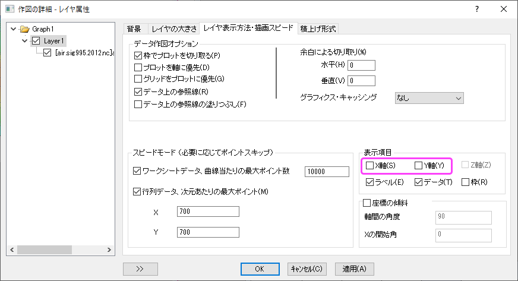

投影図付きの球面の等高線図
Sphere-Surface-Projections-NetCDF
概要
グローバルNetCDFデータ（グローバル温度データなど）をインポートすると、投影図付きの球面の等高線図を作成できます。
必要なOriginのバージョン: 2021b SR0以降
ステップ
投影図付きの球面でNetCDFデータベースのプロットを作成する
- NetCDFデータ行列のこのプロジェクトファイルを開きます。
- 行列をアクティブにし、同じ行列シートに4つの新しい行列オブジェクトを追加します。

- イメージセレクタをダブルクリックして、これらの行列オブジェクトの名前を Lon, Lat, x, y に変更します。

- 各行列をアクティブにし、表示されたミニツールバーのプロパティボタンをクリックして、値の設定を選択します。 値の設定ダイアログで、以下の式を入力します。
//Lonオブジェクト
x*pi/180
//Latオブジェクト
y*pi/180
//xオブジェクト
3*Mat(2)/2 * sqrt(1.0/3 - (Mat(3)/pi)^2)
//yオブジェクト
Mat(3)
- MBook1の1つ目の行列を選択し、メニューから作図：等高線図：カラーマップ等高線を選択します。
- グラフをダブルクリックして作図の詳細ダイアログを開きます。等高線設定タブに移動し、X座標およびY座標ドロップダウンリストで[MBook1]air!4"x"]と[MBook1]air!5"y"]を選択します。
- 左パネルでレイヤ1を選択して、レイヤ表示方法・描画スピードタブに移動します。表示項目セクションにあるX軸、Y軸チェックボックスのチェックを外します。OK をクリックして設定を保存します。

- 再スケールボタンをクリックします。
- 軸タイトルとカラースケールタイトルを削除します。すると、次のグラフのようになります。
レベル、等高線、カラーマップを編集する
- 等高線プロットをクリックして、表示されたミニツールバーで等高線の種類ボタンをクリックし、等高線なしのカラースケールを選択します。
- 表示されたミニツールバーのレベルの設定ボタンをクリックします。レベルの設定ダイアログにて、主レベル数を16、副レベル数を16に設定します。OKボタンをクリックします。
- 等高線プロットをクリックし、表示されたミニツールバーでパレットボタンをクリックします。ドロップダウンから Surface パレットを選択します。
すると、以下のグラフのような等高線プロットが得られます。
マップラインとグリッド線を追加します
ワークブックには、経度と緯度のデータ、およびグリッド線のデータがあります。まず、それらを球面に変換する必要があります。
- 列CおよびDとして2つの列を挿入し、数式の列ラベル行F(x)で、Col(C)に3 * A * pi / 180 / 2 * sqrt(1/3 - (B / 180)^2)と入力します。 そしてCol(D)にB * pi / 180と入力します。
- 列GおよびHとして2つの列を追加し、数式の列ラベル行F(x)で、Col(G)に3 * E * pi / 180 / 2 * sqrt(1/3 - (F / 180)^2)と入力します。そしてCol(H)にF * pi / 180と入力します。
- Col(C)とCol(G)をXとして設定します。
- 列Dと列Hを選択し、等高線図にドラッグアンドドロップします。グラフをダブルクリックして作図の詳細ダイアログを開き、グリッド線のスタイルを破線に設定します。
- 線の凡例を削除します。すると、以下のグラフのような等高線プロットが得られます。